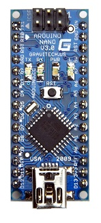
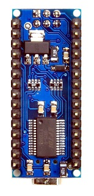

IEEE Practical Electronics Lab (Fall '10 - Spring '11)
As an IEEE officer, I ran a weekly lab designed to teach students about practical electronics. The labs were designed for non electrical engineers, or freshman interested in electrical/computer engineering. We went over basic electronics, and instead of being structured like a traditional lecture, the labs focused more on practicality and less on math and physics. Instead of deriving equations and learning various methods of circuit analysis, students learned about common circuits and used publically available schematics and formulas to make their own electronic devices. My lab was designed to be fun and engaging, while teaching students the basics behind electronics.
In Spring '11, the labs incorporated a microcontroller! Specifically the Arduino, which is a very easy to use platform for microcomputing. Every student who participates in the labs will own his or her own Arduino, and will program it as part of the lab. This will allow for a much more engaging lab, compared to copying a schematic onto a breadboard.
The following links contain the presentations I used for each lab
Fall 2010 |
Spring 2011 |
All Spring labs are centered around the Arduino Nano

